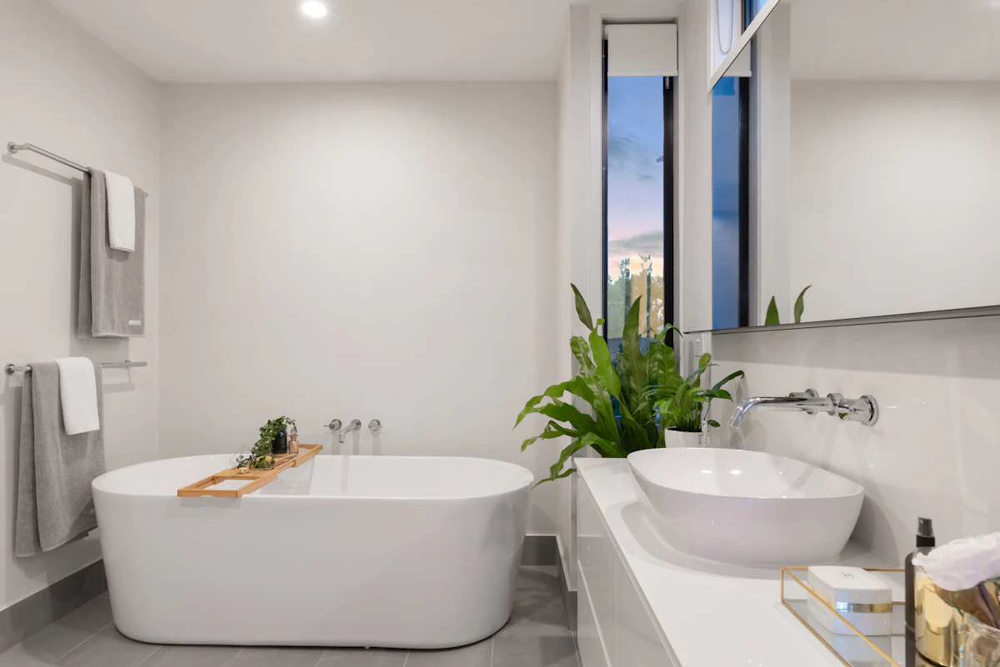
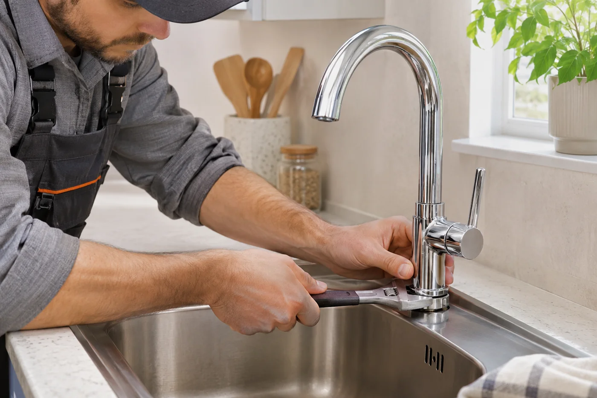
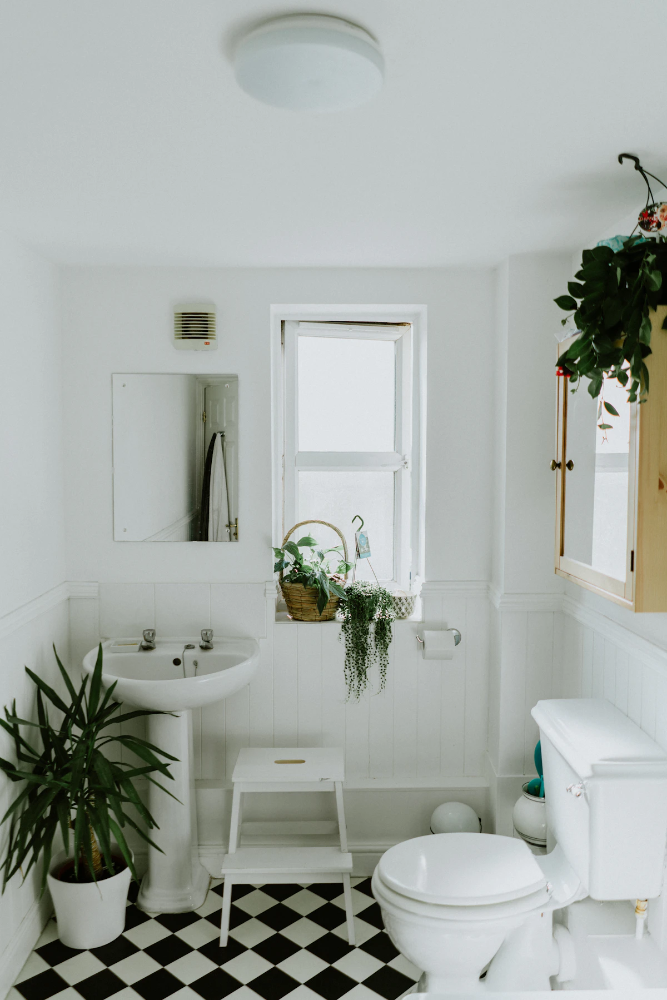
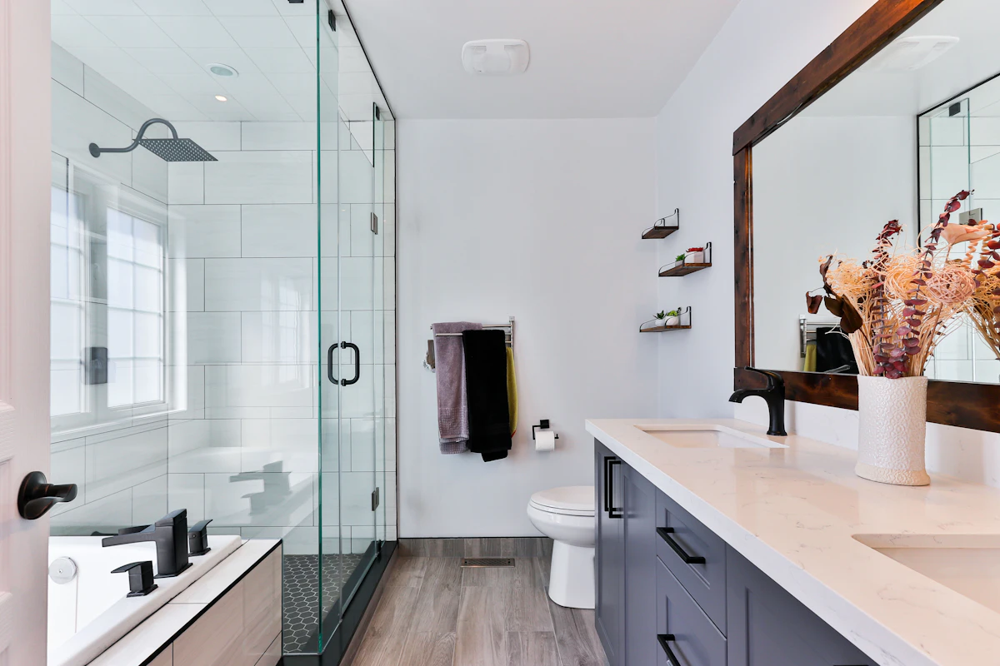

PLOMBERIE · PARIS ET BANLIEUE
Installation et réparation de robinetterie et sanitaires
Nous installons et réparons vos robinets, WC, lavabos et éviers.

Le sens du service.

Visuel d’illustration01 / ROBINETTERIE
Le bon geste pour
vos robinets.
Un robinet qui goutte, un mitigeur difficile à manœuvrer ou un joint usé ? Nous assurons la réparation et le remplacement de robinets de cuisine, de lavabo, de douche et de baignoire. Nous intervenons sur les mitigeurs et mélangeurs en tenant compte des raccordements existants.
- Remplacement des joints.
- Réparation d’une robinetterie défectueuse.
- Remplacement d’un mitigeur ou d’un mélangeur.

Visuel d’illustration02 / WC
Des sanitaires
qui fonctionnent bien.
Une chasse d’eau qui coule ou un robinet flotteur défectueux ? Nous intervenons pour la réparation de WC, le changement des joints et des abattants. Nous assurons aussi le remplacement de WC, y compris les WC suspendus, selon la configuration de votre installation.
- Chasse d’eau et robinet flotteur.
- Joints et abattants.
- Remplacement de WC et WC suspendus.

Visuel d’illustration03 / LAVABOS ET ÉVIERS
De la vasque
à l’évacuation.
Nous assurons la réparation et le remplacement de lavabos et d’éviers, ainsi que de leurs siphons, bondes et systèmes de vidage. Une fuite sous la vasque ou une évacuation défectueuse nous permet de cibler les éléments à examiner lors de notre échange.
- Siphons et bondes.
- Systèmes de vidage et d’évacuation.
- Réparation et remplacement de lavabos et d’éviers.
PARLONS DE VOTRE BESOIN
Un projet, une fuite,
une question ?
Nous prenons le temps d’échanger sur votre situation.